Econometric Filters: Henderson, Bandpass, HP, and Hamilton
Source:vignettes/econometric-filters.Rmd
econometric-filters.RmdThis vignette covers six econometric filters available in
trendseries: the Henderson and
Spencer moving averages, the
Baxter-King and Christiano-Fitzgerald
bandpass filters, and the Hodrick-Prescott and
Hamilton filters. All six are widely used in
macroeconomics and official statistics for extracting trends and
isolating business cycles.
The theme below is used throughout the vignette for consistent styling.
library(ggplot2)
theme_series <- theme_minimal(paper = "#fefefe") +
theme(
legend.position = "bottom",
panel.grid.minor = element_blank(),
strip.background = element_rect(fill = "#2c3e50"),
strip.text = element_text(color = "#fefefe"),
axis.ticks.x = element_line(color = "gray40", linewidth = 0.5),
axis.line.x = element_line(color = "gray40", linewidth = 0.5),
palette.colour.discrete = c(
"#2c3e50",
"#e74c3c",
"#f39c12",
"#1abc9c",
"#9b59b6"
)
)Henderson and Spencer Moving Averages
The Henderson Filter
The Henderson filter is the trend estimator used inside every major official seasonal adjustment program: X-11, X-13ARIMA-SEATS (US Census Bureau), and Statistics Canada’s X-12-ARIMA. Originally proposed by Robert Henderson (1916) to smooth actuarial mortality tables, it became the standard for national accounts trend extraction because it satisfies two properties simultaneously:
- Cubic polynomial reproduction. The filter passes polynomials up to degree 3 through exactly — a cubic trend is returned unchanged. This means the filter does not distort smooth, polynomial-like economic trajectories.
- Minimum roughness. Among all symmetric filters that reproduce cubic polynomials, the Henderson weights minimise the sum of squared third differences of the smoothed series, . Minimising third differences is equivalent to finding the “most gradually changing” trend consistent with the cubic-reproduction constraint.
The weights
For a filter of length , the unnormalized weights are
where is determined by setting , which enforces cubic polynomial reproduction. The weights are then normalized to sum to one.
A distinguishing feature is that the weights take small negative values at the outermost positions. Rather than amplifying peaks and troughs, the filter slightly downweights the extreme observations relative to the center. This property gives the Henderson trend its characteristic stability at turning points.
# Compute 13-term Henderson weights from the closed-form formula
n <- 13L
m <- (n - 1L) / 2L
j <- seq_len(n) - (m + 1L)
P <- ((m + 1L)^2L - j^2L) *
((m + 2L)^2L - j^2L) *
((m + 3L)^2L - j^2L)
eta <- sum(j^4L * P) / sum(j^2L * P)
w <- P * (eta - j^2L)
w <- w / sum(w)
weights_df <- data.frame(lag = j, weight = w)
ggplot(weights_df, aes(lag, weight)) +
geom_col(aes(fill = weight > 0), width = 0.65, show.legend = FALSE) +
geom_hline(yintercept = 0, color = "gray40", linewidth = 0.4) +
scale_fill_manual(values = c("FALSE" = "#e74c3c", "TRUE" = "#2c3e50")) +
scale_x_continuous(breaks = seq(-6, 6)) +
labs(
title = "13-term Henderson Filter: Weight Profile",
subtitle = "Weights sum to 1; small negative values at the outer lags stabilise turning points",
x = "Lag (j)", y = "Weight"
) +
theme_series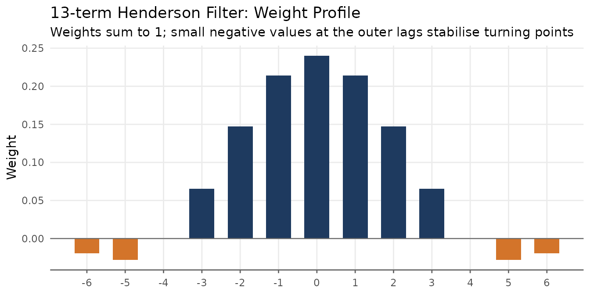
Basic usage
trendseries defaults to a 9-term filter for quarterly
data and 13-term for monthly data. Pass the data frame directly to
augment_trends(); the trend is added as a new column.
# Default: 13-term for monthly data
ibcbr_hend <- augment_trends(ibcbr, value_col = "index", methods = "henderson")
head(ibcbr_hend)
#> # A tibble: 6 × 3
#> date index trend_henderson
#> <date> <dbl> <dbl>
#> 1 2003-01-01 67.1 NA
#> 2 2003-02-01 68.8 NA
#> 3 2003-03-01 72.2 NA
#> 4 2003-04-01 71.3 NA
#> 5 2003-05-01 70.0 NA
#> 6 2003-06-01 68.8 NA
ggplot(ibcbr_hend, aes(date)) +
geom_line(aes(y = index, color = "Original"), linewidth = 0.6, alpha = 0.7) +
geom_line(aes(y = trend_henderson, color = "Trend: 13-term Henderson"),
linewidth = 0.9) +
scale_x_date(date_breaks = "3 years", date_labels = "%Y") +
labs(
title = "IBC-Br: 13-term Henderson Moving Average",
x = NULL, y = "Index", color = NULL
) +
theme_series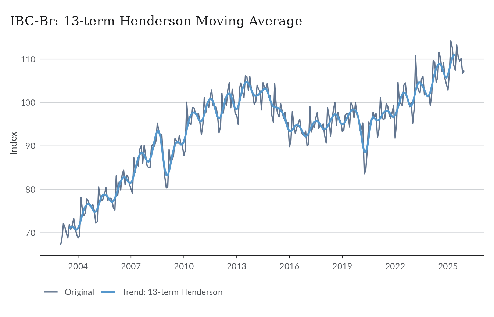
Choosing the window
The three standard lengths reflect the trade-off between smoothness and endpoint coverage:
- 9-term — the standard for quarterly data; suppresses cycles shorter than four quarters.
-
13-term — the default for monthly data in X-11 and
in
trendseries. Loses six observations at each end of the sample. - 23-term — for monthly series with high irregularity (sharp spikes, volatile revisions). Loses eleven observations at each end.
X-13ARIMA-SEATS selects among these three lengths automatically using the irregularity-to-cycle (I/C) ratio, a signal-to-noise measure computed from the series. In practice, 13-term is the right starting point for most monthly indicators.
Passing a vector to window runs all lengths in a single
call and returns one column per window, named
trend_henderson_{n}.
ibcbr_windows <- ibcbr |>
filter(date >= as.Date("2015-01-01")) |>
augment_trends(
value_col = "index",
methods = "henderson",
window = c(9, 13, 23),
.quiet = TRUE
)
ibcbr_windows_long <- ibcbr_windows |>
pivot_longer(
cols = starts_with("trend_henderson_"),
names_to = "window",
values_to = "trend"
) |>
mutate(
window = factor(
window,
levels = c(
"trend_henderson_9",
"trend_henderson_13",
"trend_henderson_23"
),
labels = c("9-term", "13-term", "23-term")
)
)
ggplot(ibcbr_windows_long, aes(date, trend)) +
geom_line(
data = ibcbr_windows,
aes(y = index),
color = "#2c3e50",
alpha = 0.5,
linewidth = 0.5
) +
geom_line(color = "#e74c3c", linewidth = 0.9, na.rm = TRUE) +
facet_wrap(vars(window), ncol = 1) +
scale_x_date(date_breaks = "2 years", date_labels = "%Y") +
labs(
title = "Henderson Filter: Effect of Window Size",
subtitle = "Gray = original series; larger windows are smoother but lose more data at the endpoints",
x = NULL,
y = "Index"
) +
theme_series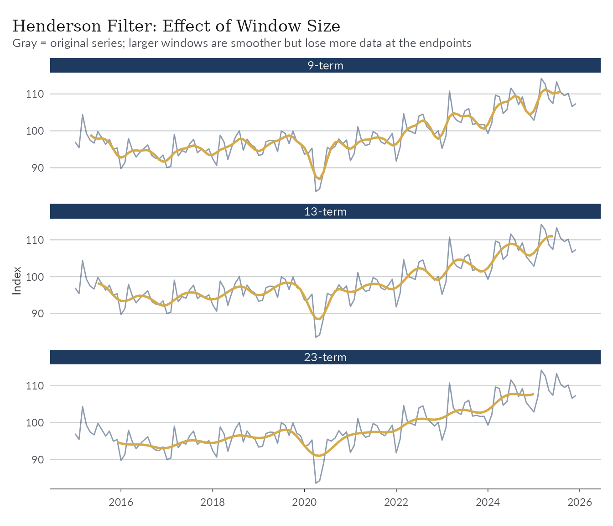
When to use the Henderson filter: It is the natural choice when matching the methodology of official seasonal adjustment software (X-11, X-13, TRAMO-SEATS), or when you need a symmetric filter that exactly preserves polynomial trends up to degree 3. For monthly data, 13-term is the right default; switch to 23-term only if the series has sharp irregular spikes. For quarterly data, use 9-term.
When to be cautious: Like all symmetric filters, Henderson loses observations at each end — 6 months for the 13-term, 11 months for the 23-term. If end-of-sample estimates matter (nowcasting, near real-time monitoring), the one-sided HP filter or the Hamilton filter are more appropriate choices.
The Spencer Moving Average
The Spencer 15-term moving average is the classical predecessor of
the Henderson filter, originally designed for smoothing mortality
tables. It uses fixed weights — no tuning parameters — and passes
polynomials up to degree 3, just like the Henderson filter. Because
trendseries applies linear extrapolation at the endpoints,
the Spencer filter returns a trend for every observation.
ibcbr_sp <- augment_trends(ibcbr, value_col = "index", methods = "spencer")
ibcbr_sp_recent <- ibcbr_sp |>
filter(date >= as.Date("2015-01-01"))
ggplot(ibcbr_sp_recent, aes(date)) +
geom_line(aes(y = index, color = "Original"), linewidth = 0.6, alpha = 0.7) +
geom_line(aes(y = trend_spencer, color = "Trend: Spencer 15-term"),
linewidth = 0.9) +
scale_x_date(date_breaks = "2 years", date_labels = "%Y") +
labs(
title = "IBC-Br: Spencer 15-term Moving Average",
x = NULL, y = "Index", color = NULL
) +
theme_series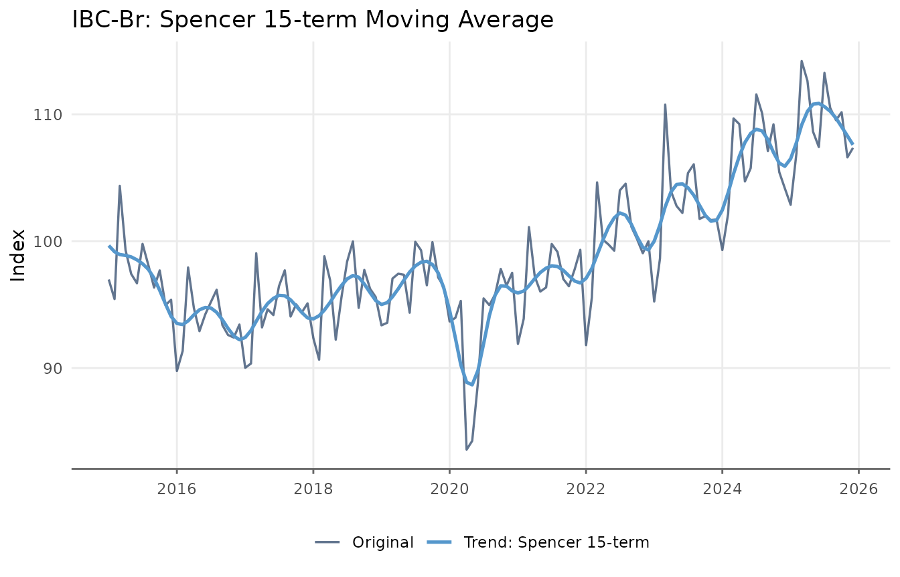
Comparing Henderson and Spencer on the same chart reveals that the
two filters are very similar. The main practical advantage of the
Henderson filter is that its length can be chosen to match the
irregularity of the series. The augment_trends function
accepts multiple methods and returns a column for each method.
ibcbr_hs <- ibcbr |>
augment_trends(
value_col = "index",
methods = c("henderson", "spencer"),
.quiet = TRUE
)
ibcbr_hs_long <- ibcbr_hs |>
filter(date >= as.Date("2015-01-01")) |>
pivot_longer(
cols = c(trend_henderson, trend_spencer),
names_to = "filter",
values_to = "trend"
) |>
mutate(
filter = recode(
filter,
trend_henderson = "Henderson (13-term)",
trend_spencer = "Spencer (15-term)"
)
)
ggplot(ibcbr_hs_long, aes(date, trend)) +
geom_line(
aes(y = index),
color = "gray70",
linewidth = 0.5
) +
geom_line(color = "#2c3e50", linewidth = 0.9, na.rm = TRUE) +
facet_wrap(vars(filter), ncol = 2) +
scale_x_date(date_breaks = "1 year", date_labels = "%Y") +
labs(
title = "Henderson vs. Spencer",
subtitle = "Gray = original series; both filters produce very similar trends",
x = NULL,
y = "Index"
) +
theme_series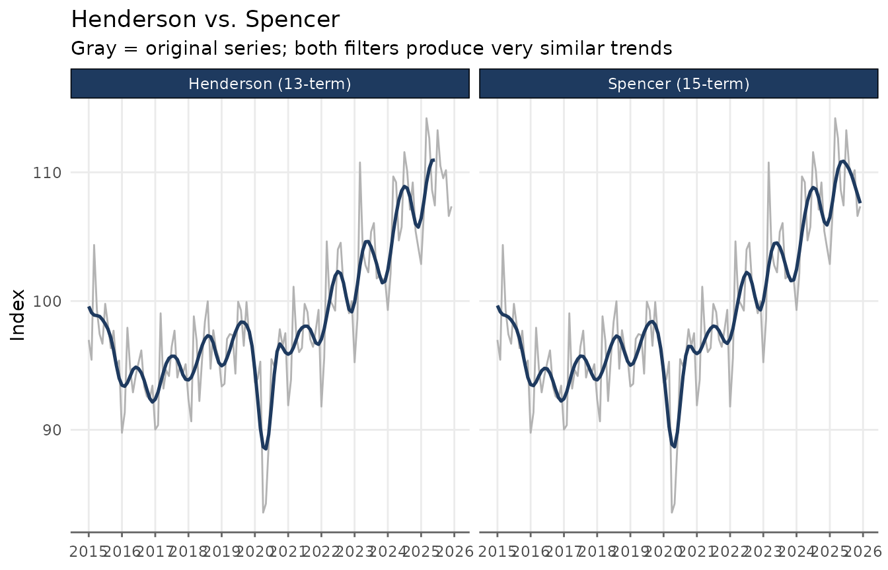
Bandpass Filters: Baxter-King and Christiano-Fitzgerald
Bandpass filters are designed to isolate oscillations within a specific frequency range. In macroeconomics the goal is usually to isolate the business cycle: fluctuations with periods between roughly 1.5 and 8 years (6 to 32 quarters). The trend returned by these filters is the series with those frequencies removed: a very smooth, long-run path.
Both the Baxter-King (BK) and Christiano-Fitzgerald (CF) filters share the same economic interpretation: they pass only components with periods outside the band and suppress everything within that band.
We use the quarterly GDP construction index (Brazil) to illustrate these filters, since quarterly data maps naturally onto the standard 6–32 quarter business cycle definition.
ggplot(gdp_construction, aes(date, index)) +
geom_line(linewidth = 0.7, color = "#2c3e50") +
scale_x_date(date_breaks = "5 years", date_labels = "%Y") +
labs(
title = "GDP – Construction (Brazil)",
subtitle = "Chained index, quarterly",
x = NULL,
y = "Index"
) +
theme_series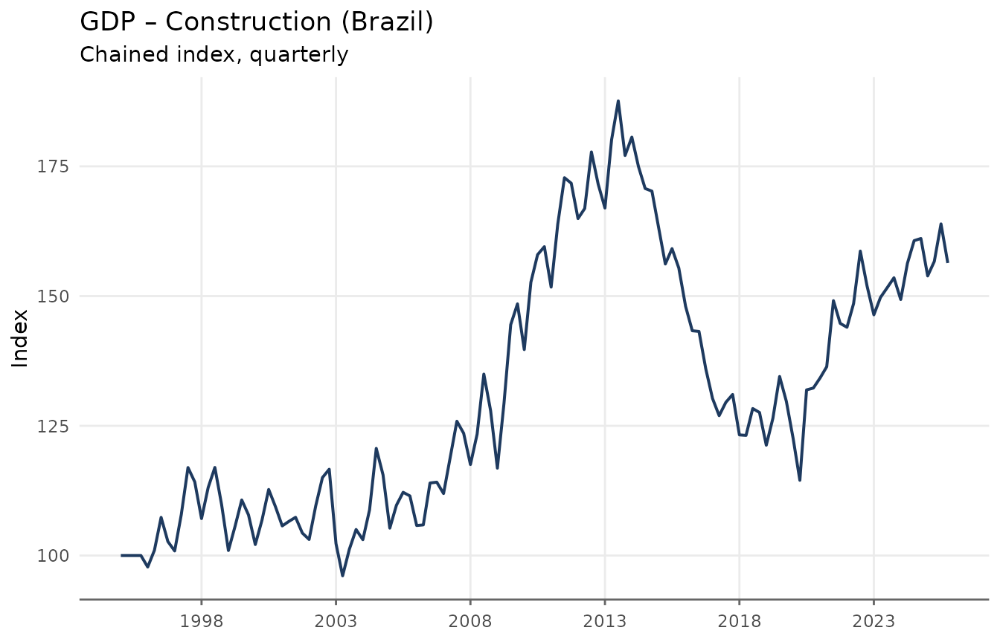
Baxter-King Filter
The BK filter approximates the ideal bandpass filter with a symmetric moving average. Its weights are chosen to minimise the distance between the approximating filter and the ideal (brick-wall) bandpass filter in the frequency domain. The key parameters are:
-
band = c(pl, pu): lower and upper period bounds (in quarters by default). The defaultc(6, 32)targets cycles of 1.5 to 8 years — the standard macroeconomic business cycle definition.
Because the BK filter is symmetric, it introduces missing values at each end of the series.
gdp_bk <- augment_trends(
gdp_construction,
date_col = "date",
value_col = "index",
methods = "bk"
)
head(gdp_bk)
#> # A tibble: 6 × 3
#> date index trend_bk
#> <date> <dbl> <dbl>
#> 1 1995-01-01 100 NA
#> 2 1995-04-01 100 NA
#> 3 1995-07-01 100 NA
#> 4 1995-10-01 100 NA
#> 5 1996-01-01 97.8 NA
#> 6 1996-04-01 101. NA
ggplot(gdp_bk, aes(date)) +
geom_line(aes(y = index, color = "Original"), linewidth = 0.6, alpha = 0.7) +
geom_line(
aes(y = trend_bk, color = "Trend: Baxter-King"),
linewidth = 0.9,
na.rm = TRUE
) +
scale_x_date(date_breaks = "5 years", date_labels = "%Y") +
labs(
title = "GDP Construction: Baxter-King Filter",
subtitle = "Trend after removing business-cycle frequencies (6–32 quarters)",
x = NULL,
y = "Index",
color = NULL
) +
theme_series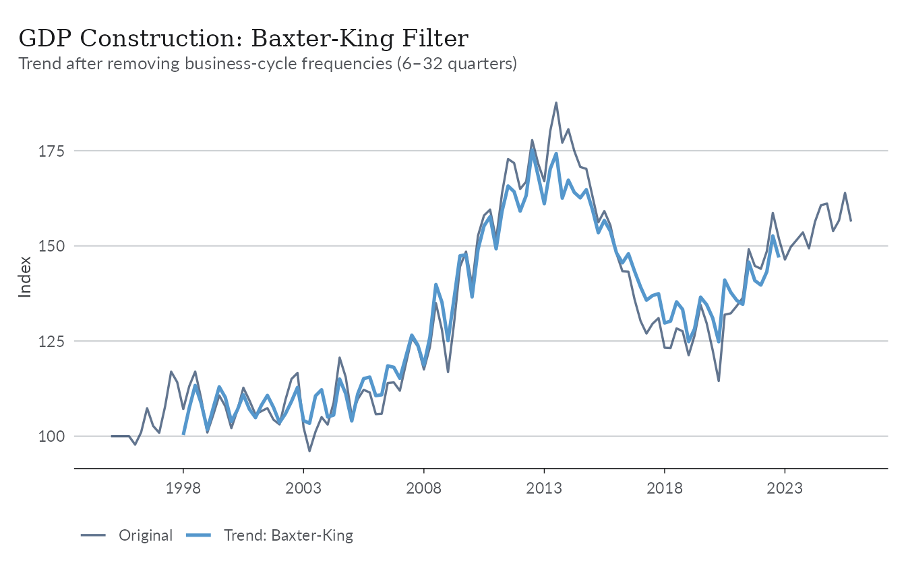
It is often more informative to look at the cyclical component: the deviations of the series from its long-run trend.
ggplot(gdp_cycle_bk, aes(date, cycle)) +
geom_hline(yintercept = 0, color = "gray50", linewidth = 0.5) +
geom_line(linewidth = 0.8, color = "#e74c3c") +
geom_area(alpha = 0.2, fill = "#e74c3c") +
scale_x_date(date_breaks = "5 years", date_labels = "%Y") +
labs(
title = "GDP Construction: Business Cycle (BK Filter)",
subtitle = "Deviations from long-run trend; positive = above trend",
x = NULL, y = "Cyclical component"
) +
theme_series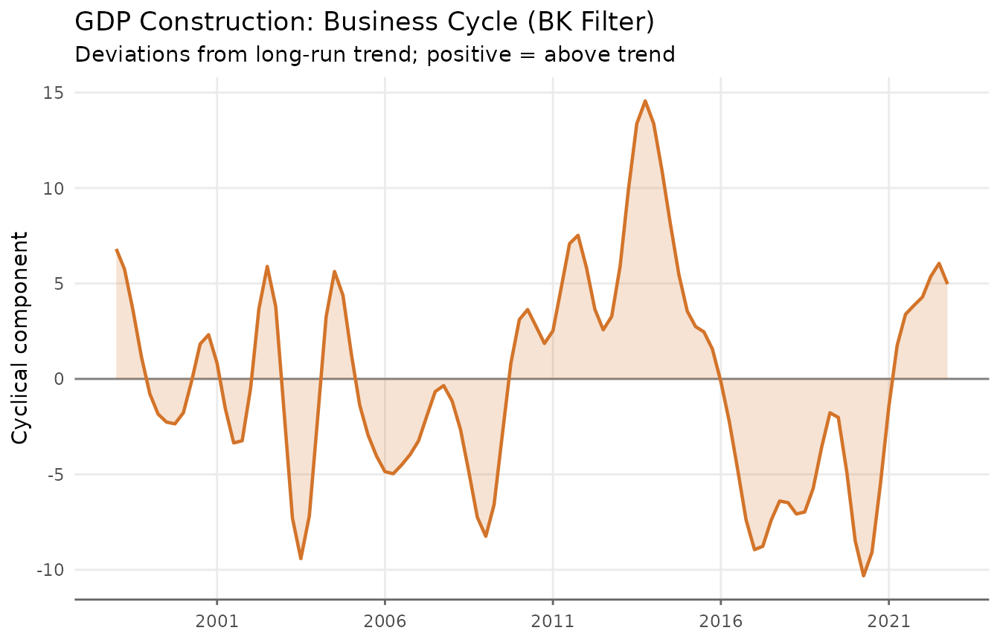
When to use BK: It is the standard reference filter for business cycle analysis in academic research. Prefer it when reproducibility matters and the series is long enough.
When to avoid BK: The rule of thumb is to have at least observations. With the default
pu = 32quarters, that means at least 96 quarterly observations (24 years). Shorter series will have unreliable endpoint estimates.
Christiano-Fitzgerald Filter
The CF filter relaxes the symmetry requirement: it is an asymmetric filter that uses all available observations, including those near the endpoints. As a result, it produces no missing values due to truncation.
The parameters are the same as for BK (band = c(pl, pu))
and the economic interpretation is identical.
gdp_bk_cf <- augment_trends(
gdp_construction,
date_col = "date",
value_col = "index",
methods = c("bk", "cf")
)
gdp_cycles_long <- gdp_bk_cf |>
mutate(
`Baxter-King` = index - trend_bk,
`Christiano-Fitzgerald` = index - trend_cf
) |>
pivot_longer(
cols = c(`Baxter-King`, `Christiano-Fitzgerald`),
names_to = "filter",
values_to = "cycle"
)
ggplot(gdp_cycles_long, aes(date, cycle)) +
geom_hline(yintercept = 0, color = "gray50", linewidth = 0.4) +
geom_line(color = "#e74c3c", linewidth = 0.8, na.rm = TRUE) +
geom_area(alpha = 0.15, fill = "#e74c3c", na.rm = TRUE) +
facet_wrap(vars(filter), ncol = 2) +
scale_x_date(date_breaks = "5 years", date_labels = "%Y") +
labs(
title = "Business Cycle: Baxter-King vs. Christiano-Fitzgerald",
subtitle = "Both isolate cycles of 6–32 quarters; CF has no endpoint NAs",
x = NULL, y = "Cyclical component"
) +
theme_series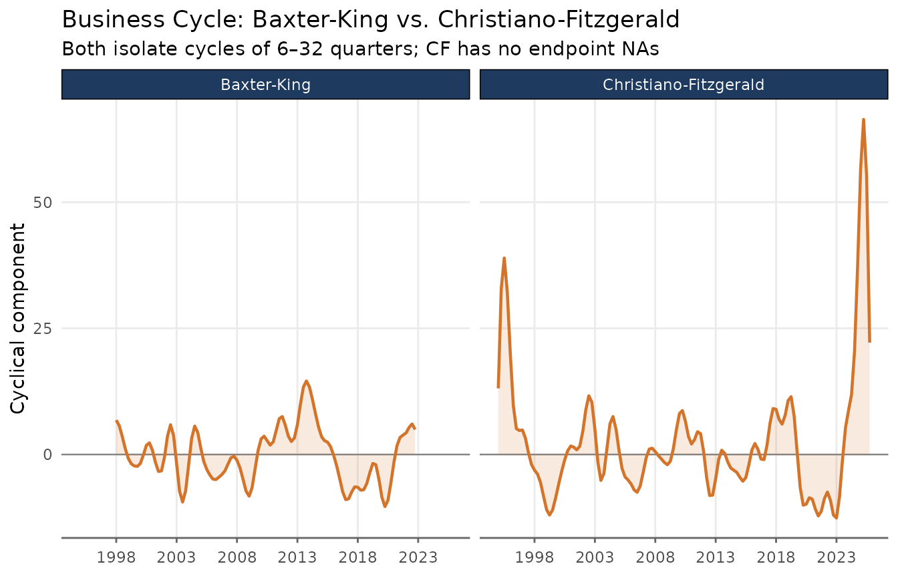
The two filters track each other closely in the interior of the sample. The CF filter’s main advantage is its ability to provide estimates at the endpoints, making it the safer default when the sample is short or when recent values are important.
The Hodrick-Prescott Filter
The Hodrick-Prescott (HP) filter is one of the most widely used trend-extraction methods in macroeconomics. It finds the trend that solves the penalised least-squares problem
where is the second difference. The smoothing parameter trades off fit against smoothness: larger values force closer to a linear trend. The standard values are for quarterly data and for monthly data. These defaults typically produce very smooth trends.
ibcbr_hp <- augment_trends(ibcbr, value_col = "index", methods = "hp")
head(ibcbr_hp)
#> # A tibble: 6 × 3
#> date index trend_hp
#> <date> <dbl> <dbl>
#> 1 2003-01-01 67.1 69.0
#> 2 2003-02-01 68.8 69.3
#> 3 2003-03-01 72.2 69.6
#> 4 2003-04-01 71.3 69.9
#> 5 2003-05-01 70.0 70.2
#> 6 2003-06-01 68.8 70.5
ggplot(ibcbr_hp, aes(date)) +
geom_line(aes(y = index, color = "Original"), linewidth = 0.6, alpha = 0.7) +
geom_line(aes(y = trend_hp, color = "Trend: HP (λ = 14,400)"),
linewidth = 0.9) +
scale_x_date(date_breaks = "3 years", date_labels = "%Y") +
labs(
title = "IBC-Br: Hodrick-Prescott Filter",
x = NULL, y = "Index", color = NULL
) +
theme_series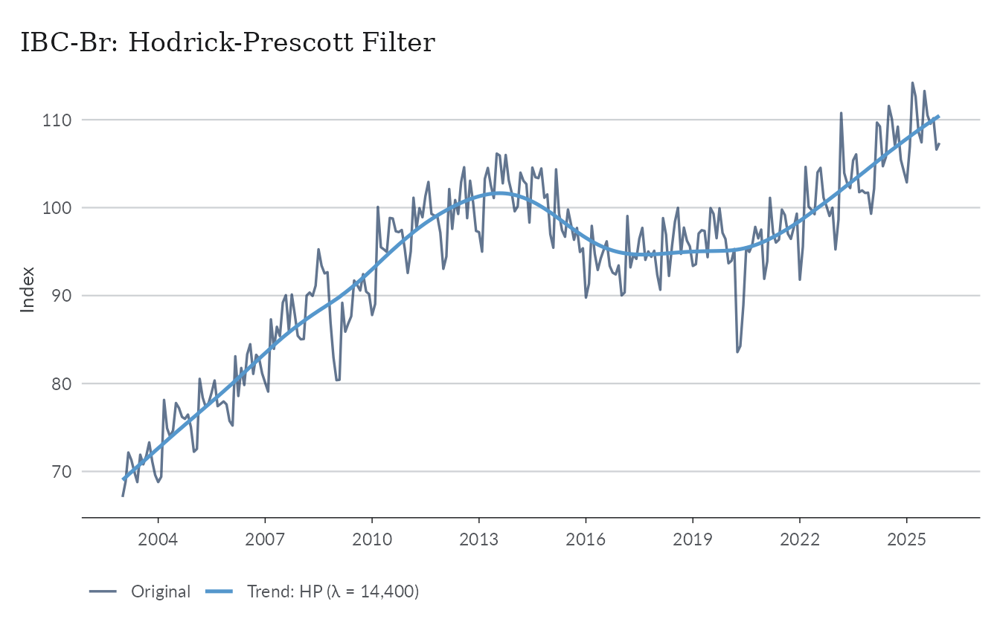
The smoothing parameter
The smoothing argument controls
.
Values above 1 are used directly; values in
are interpreted as a fraction of the standard lambda.
hp_lambdas <- ibcbr |>
filter(date >= as.Date("2010-01-01")) |>
augment_trends(
value_col = "index",
methods = "hp",
smoothing = 1600,
.quiet = TRUE
) |>
augment_trends(
value_col = "index",
methods = "hp",
smoothing = 14400,
.quiet = TRUE
) |>
augment_trends(
value_col = "index",
methods = "hp",
smoothing = 129600,
.quiet = TRUE
)
hp_lambdas_long <- hp_lambdas |>
pivot_longer(
cols = starts_with("trend_hp"),
names_to = "lambda",
values_to = "trend"
) |>
mutate(
lambda = factor(
lambda,
levels = c("trend_hp", "trend_hp_1", "trend_hp_2"),
labels = c("λ = 1,600", "λ = 14,400 (default)", "λ = 129,600")
)
)
ggplot(hp_lambdas_long, aes(date, trend)) +
geom_line(
data = hp_lambdas,
aes(y = index),
color = "gray60",
linewidth = 0.5
) +
geom_line(color = "#2c3e50", linewidth = 0.9) +
facet_wrap(vars(lambda), ncol = 3) +
scale_x_date(date_breaks = "3 years", date_labels = "%Y") +
labs(
title = "HP Filter: Effect of the Smoothing Parameter λ",
subtitle = "Gray = original series; larger λ → smoother trend, closer to a linear fit",
x = NULL,
y = "Index"
) +
theme_series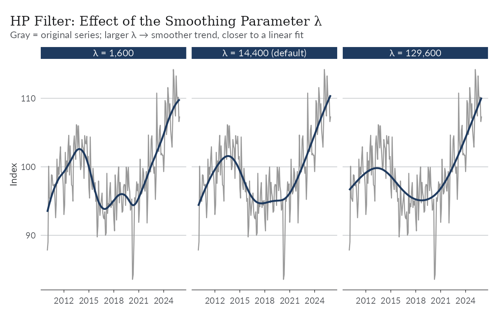
When to use HP: It is the standard benchmark in academic macro and is directly comparable across studies that use the same . The two-sided HP filter (the default) provides a balanced trend with no asymmetric lag.
Known limitations: The HP filter suffers from an endpoint problem — the trend at recent observations is strongly influenced by the last data point and can exhibit spurious movements. Hamilton (2018) shows that the HP filter can introduce spurious cyclicality even in random walk processes. For real-time or end-of-sample analysis, consider the one-sided HP filter (
params = list(hp_onesided = TRUE)) or the Hamilton filter.
The Hamilton Filter
Hamilton (2018) proposed a regression-based alternative specifically designed to avoid the HP filter’s shortcomings. The idea is to regress the value periods ahead on lags of the current level:
The fitted values serve as the trend estimate. The residuals form the cyclical component.
The recommended parameters from Hamilton (2018) are:
- Monthly data: (two years ahead), (one year of lags)
- Quarterly data: (two years ahead), (one year of lags)
For quarterly data the regression written out in full is:
These are the defaults in trendseries for monthly and
quarterly series respectively. Because the regressors require
consecutive lags and the dependent variable requires
forward observations, the first
observations have no trend estimate.
ibcbr_hamilton <- augment_trends(
ibcbr,
value_col = "index",
methods = "hamilton"
)
head(ibcbr_hamilton)
#> # A tibble: 6 × 3
#> date index trend_hamilton
#> <date> <dbl> <dbl>
#> 1 2003-01-01 67.1 NA
#> 2 2003-02-01 68.8 NA
#> 3 2003-03-01 72.2 NA
#> 4 2003-04-01 71.3 NA
#> 5 2003-05-01 70.0 NA
#> 6 2003-06-01 68.8 NA
ggplot(ibcbr_hamilton, aes(date)) +
geom_line(aes(y = index, color = "Original"), linewidth = 0.6, alpha = 0.7) +
geom_line(
aes(y = trend_hamilton, color = "Trend: Hamilton"),
linewidth = 0.9,
na.rm = TRUE
) +
scale_x_date(date_breaks = "3 years", date_labels = "%Y") +
labs(
title = "IBC-Br: Hamilton Filter",
subtitle = paste0(
"Fitted values from y[t+24] ~ y[t] + ... + y[t-11]; ",
"first 35 rows are NA (h + p - 1 = 24 + 12 - 1)"
),
x = NULL,
y = "Index",
color = NULL
) +
theme_series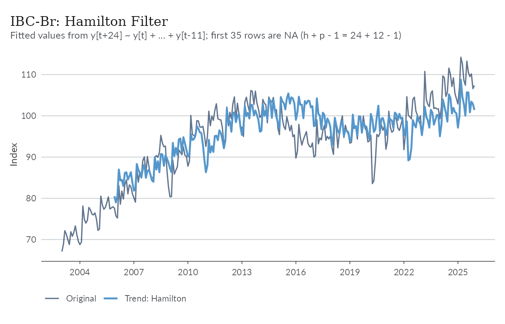
The cyclical component — the deviations of the series from the Hamilton trend — reveals the business cycle as estimated by the regression residuals.
ibcbr_hamilton_cycle <- ibcbr_hamilton |>
mutate(cycle = index - trend_hamilton) |>
filter(!is.na(cycle))
ggplot(ibcbr_hamilton_cycle, aes(date, cycle)) +
geom_hline(yintercept = 0, color = "gray50", linewidth = 0.5) +
geom_line(linewidth = 0.8, color = "#e74c3c") +
geom_area(alpha = 0.2, fill = "#e74c3c") +
scale_x_date(date_breaks = "3 years", date_labels = "%Y") +
labs(
title = "IBC-Br: Cyclical Component (Hamilton Filter)",
subtitle = "Residuals from the Hamilton regression; positive = above trend",
x = NULL, y = "Cyclical component"
) +
theme_series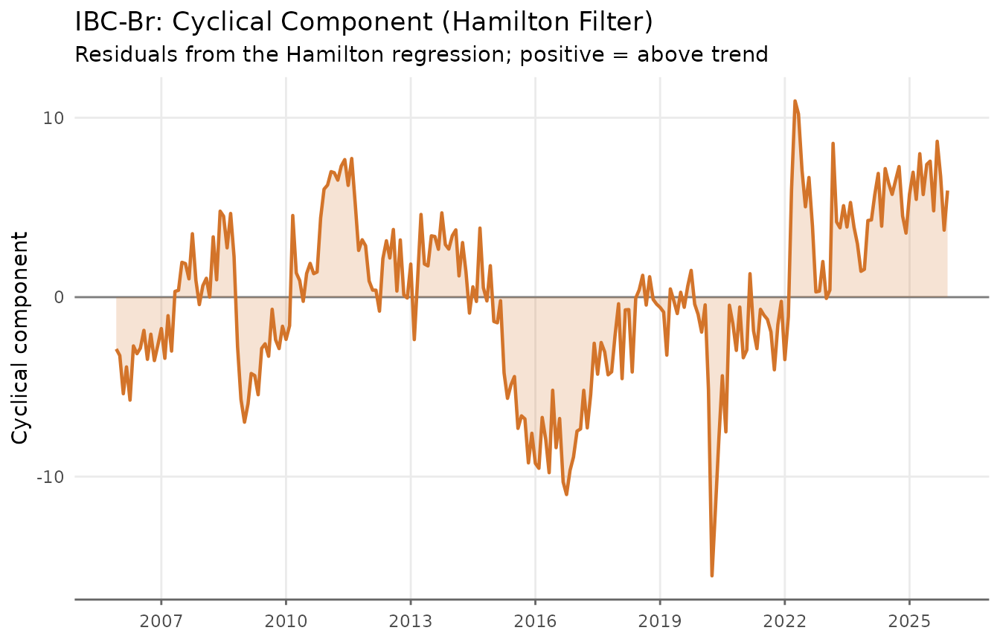
Hamilton vs. HP
The key differences between the two filters become visible when comparing them side by side. In contrast to the HP filter, the Hamilton trend shows more variability — it reacts faster to structural changes and does not exhibit the smooth “gliding” behaviour that HP produces near the endpoints of the sample.
hp_vs_ham <- ibcbr |>
filter(date >= as.Date("2010-01-01")) |>
augment_trends(
value_col = "index",
methods = c("hp", "hamilton"),
.quiet = TRUE
)
hp_ham_long <- hp_vs_ham |>
pivot_longer(
cols = c(trend_hp, trend_hamilton),
names_to = "filter",
values_to = "trend"
) |>
mutate(
filter = recode(
filter,
trend_hp = "HP (λ = 14,400)",
trend_hamilton = "Hamilton (h = 24, p = 12)"
)
)
ggplot(hp_ham_long, aes(date, trend)) +
geom_line(
data = hp_vs_ham,
aes(y = index),
color = "gray70",
linewidth = 0.5
) +
geom_line(color = "#2c3e50", linewidth = 0.9, na.rm = TRUE) +
facet_wrap(vars(filter), ncol = 2) +
scale_x_date(date_breaks = "2 years", date_labels = "%Y") +
labs(
title = "HP vs. Hamilton Filter on IBC-Br",
subtitle = "Gray = original series; HP is smoother, Hamilton reacts faster and avoids endpoint distortion",
x = NULL,
y = "Index"
) +
theme_series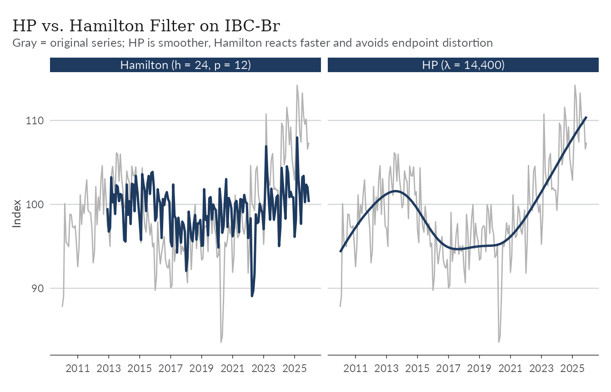
When to use Hamilton: Prefer it when the endpoint problem of HP is a concern (e.g., near real-time analysis), or when you want a trend that is robust to the critiques in Hamilton (2018). It is also straightforward to interpret: the trend is simply a projection of the future level onto past values.
Limitations: The first observations have no trend estimate (35 months for the default monthly settings, 11 quarters for quarterly). Unlike the HP filter, the trend is available all the way to the last observation in the sample.
All Filters Together
Applying several filters simultaneously is straightforward with
augment_trends. The comparison below uses the IBC-Br after
2010, where all filters have sufficient data.
ibcbr_all <- ibcbr |>
filter(date >= as.Date("2010-01-01")) |>
augment_trends(
value_col = "index",
methods = c("henderson", "spencer", "hp", "hamilton"),
.quiet = TRUE
)
ibcbr_all_long <- ibcbr_all |>
pivot_longer(
cols = c(trend_henderson, trend_spencer, trend_hp, trend_hamilton),
names_to = "filter",
values_to = "trend"
) |>
mutate(
filter = factor(
filter,
levels = c(
"trend_henderson",
"trend_spencer",
"trend_hp",
"trend_hamilton"
),
labels = c(
"Henderson (13-term)",
"Spencer (15-term)",
"HP (λ = 14,400)",
"Hamilton (h=24, p=12)"
)
)
)
ggplot(ibcbr_all_long, aes(date, trend)) +
geom_line(
data = ibcbr_all,
aes(y = index),
color = "gray70",
linewidth = 0.5
) +
geom_line(color = "#2c3e50", linewidth = 0.8, na.rm = TRUE) +
facet_wrap(vars(filter), ncol = 2) +
scale_x_date(date_breaks = "3 years", date_labels = "%Y") +
labs(
title = "IBC-Br: All Filters Compared",
subtitle = "Gray = original series",
x = NULL,
y = "Index"
) +
theme_series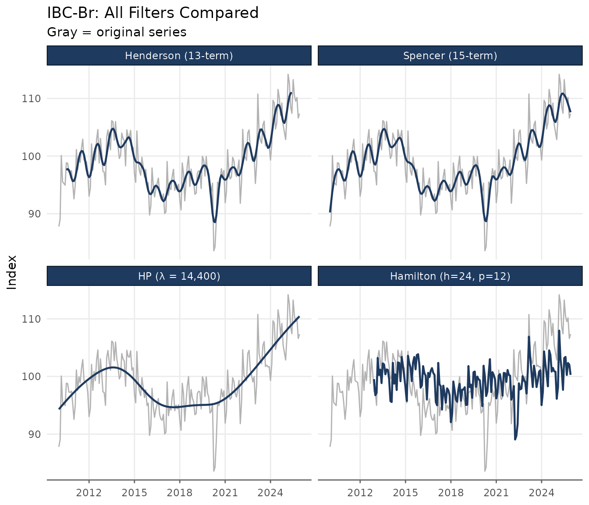
The Henderson and Spencer filters are the smoothest and closest to each other. HP produces a similar result but is derived from a different optimisation criterion. Hamilton tracks the series more closely and shows more residual variation in the trend.
Quick Reference
| Filter | Key parameter | Default (monthly) | Endpoint NAs | Main use |
|---|---|---|---|---|
henderson |
window (odd integer) |
13 |
floor(window/2) each end |
Official statistics, X-11/X-13 |
spencer |
— | 15 (fixed) | 0 (extrapolated) | Classical smoothing |
bk |
band = c(pl, pu) |
c(6, 32) |
~pu/2 each end |
Business cycle isolation, long series |
cf |
band = c(pl, pu) |
c(6, 32) |
0 | Business cycle isolation, any length |
hp |
smoothing (λ) |
14 400 | 0 | Macro benchmark, cycle extraction |
hamilton |
params (h, p) |
h=24, p=12 | First h+p−1 | Real-time trend, HP alternative |
References
Baxter, M. & King, R. G. (1999). Measuring business cycles: Approximate band-pass filters for economic time series. Review of Economics and Statistics, 81(4), 575–593.
Christiano, L. J. & Fitzgerald, T. J. (2003). The band pass filter. International Economic Review, 44(2), 435–465.
Hamilton, J. D. (2018). Why you should never use the Hodrick-Prescott filter. Review of Economics and Statistics, 100(5), 831–843.
Henderson, R. (1916). Note on graduation by adjusted average. Transactions of the Actuarial Society of America, 17, 43–48.
Hodrick, R. J. & Prescott, E. C. (1997). Postwar U.S. business cycles: An empirical investigation. Journal of Money, Credit and Banking, 29(1), 1–16.
Ravn, M. O. & Uhlig, H. (2002). On adjusting the Hodrick-Prescott filter for the frequency of observations. Review of Economics and Statistics, 84(2), 371–376.